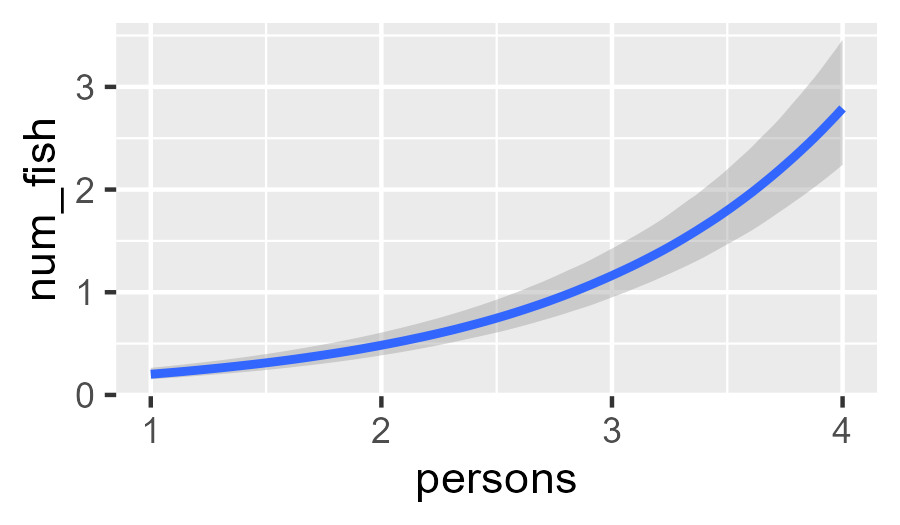
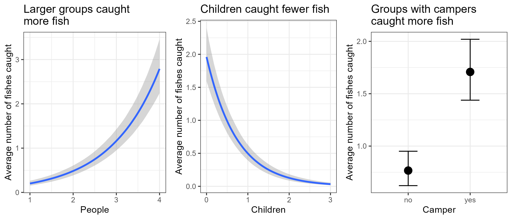

Load libraries
library(dplyr)
library(ggplot2)
library(brms)
library(tidybayes)
library(bayesplot)
library(gridExtra)
options(brms.backend = "cmdstanr")Now that we can write brms models and read their output, we can brave more complicated models.
library(dplyr)
library(ggplot2)
library(brms)
library(tidybayes)
library(bayesplot)
library(gridExtra)
options(brms.backend = "cmdstanr")Let us consider some data from park visitors, gathered by UCLA1. In their words “the state wildlife biologists want to model how many fish are being caught by fishermen at a state park. Visitors are asked whether or not they have a camper, how many people were in the group, were there children in the group and how many fish were caught. Some visitors do not fish, but there is no data on whether a person fished or not. Some visitors who did fish did not catch any fish […]”2
These data describe 250 groups of park visitors. For each group, we know how many fish they caught (count), how many total people were in the group (persons), how many of these were children (child), and whether the group brought a camper (camper).
fisher_df <- read.csv("https://paul-buerkner.github.io/data/fish.csv")
fisher_df <- fisher_df[, c("persons", "child", "camper", "count")]
names(fisher_df)[names(fisher_df) == "count"] <- "num_fish"
fisher_df <- fisher_df |>
mutate(camper = as.factor(if_else(camper == 0, true = "no", false = "yes")))
summary(fisher_df) persons child camper num_fish
Min. :1.000 Min. :0.000 no :103 Min. : 0.000
1st Qu.:2.000 1st Qu.:0.000 yes:147 1st Qu.: 0.000
Median :2.000 Median :0.000 Median : 0.000
Mean :2.528 Mean :0.684 Mean : 3.296
3rd Qu.:4.000 3rd Qu.:1.000 3rd Qu.: 2.000
Max. :4.000 Max. :3.000 Max. :149.000 It is reasonable to think that larger groups were more likely to catch more fish. Also, groups with campers likely stayed longer at the park, which would give them more time to fish. But children do not often like to sit silently for long periods, so groups with more children may have fished less.
These ideas suggest using a model that can associate the average number of caught fish to persons, child, and camper. We should also use a model that accounts for the fact that the number of fishes caught is a non-negative integer. A Poisson regression is a relatively simple model that can fulfil both of these requirements.
Note, however, that many visitor groups caught zero fishes (see figure below). These include zeroes from visitors that did not fish at all and zeroes from visitors that did fish but caught nothing. Unfortunately, a regular Poisson regression cannot account for these many zeroes, and ignoring them would distort our inferences. Fortunately, with brms we can expand our model to be able estimate the proportion of groups that did not fish at all. This expanded model is called “zero-inflated Poisson regression” because it inflates (i.e., adds more) zeroes to the basic Poisson regression. For now, we presume that all groups had the same chance of going fishing.
ggplot(data = fisher_df, mapping = aes(x = num_fish)) +
geom_histogram(binwidth = 2, color = "black", fill = "navyblue") +
labs(
title = "Many groups did not catch any fish",
x = "Fish caught",
y = "Groups of visitors"
) +
theme_bw()
The code to fit this zero-inflated regression is shown below. The only novelty here is the argument family, which controls the type of model we want to fit—in this case, a zero_inflated_poisson().
fit_fisher1 <- brm(
formula = num_fish ~ persons + child + camper,
data = fisher_df,
family = zero_inflated_poisson(),
chains = 4,
cores = 4,
iter = 1000,
warmup = 500
)Once again, our ESS and R-hats are all acceptable:
summary(fit_fisher1)For mathy reasons, the regression coefficients are in the natural logarithm scale, which complicates their interpretation. Instead, we can use conditional_effects() to plot the modeled associations between each variable and the average number of fish. The plots below show the medians and 95% credibility intervals of the posterior distributions of fish at each value of the corresponding independent variable. When a variable is not shown in a plot, we are fixing its value at either its average (for continuous variables) or its reference category (for categorical variables).
We start by visualizing the association between average fishes caught and the number of people in a group:
conditional_effects(
x = fit_fisher1,
method = "posterior_epred",
effect = "persons"
)
The main lesson from this plot is that groups of visitors with more people caught more fish on average, but the difference was not big. With some effort, we can use ggplot to embelish this plot. We do the same for the associations of children and camper.
# Number of people
person_assoc <- plot(
conditional_effects(
x = fit_fisher1,
method = "posterior_epred",
effect = "persons"
),
plot = FALSE
)[[1]] +
labs(
title = "Larger groups caught\nmore fish",
x = "People",
y = "Average number of fishes caught"
) +
theme_bw()
# Children
child_assoc <- plot(
conditional_effects(
x = fit_fisher1,
method = "posterior_epred",
effect = "child"
),
plot = FALSE
)[[1]] +
labs(
title = "Children caught fewer\nfish",
x = "Children",
y = "Average number of fishes caught"
) +
theme_bw()
# Camper
camper_assoc <- plot(
conditional_effects(
x = fit_fisher1,
method = "posterior_epred",
effect = "camper"
),
plot = FALSE
)[[1]] +
labs(
title = "Groups with campers\ncaught more fish",
x = "Camper",
y = "Average number of fishes caught"
) +
theme_bw()
# Arrange these plots in a single row
grid.arrange(
arrangeGrob(person_assoc, child_assoc, camper_assoc, ncol = 3),
nrow = 1
)
tst = grid.arrange(
arrangeGrob(person_assoc, child_assoc, camper_assoc, ncol = 3),
nrow = 1
)Let’s see if our ingenuous use of zero inflation paid off. First, let’s review the part of summary that refers to this expansion of the model:
Further Distributional Parameters:
Estimate Est.Error l-95% CI u-95% CI Rhat Bulk_ESS Tail_ESS
zi 0.41 0.04 0.32 0.49 1.00 1463 1233In general, the parameter zi (short for “zero inflation”) represents the probability of an observation being an excess zero. In our model, we can interpret zi as the probability of not going fishing. This probability is estimated to be between 32% and 49%.
Now we can check if our model can replicate the overall pattern of fish caught. The function pp_check() offers many types of plots to check how well our model fits the data. It asks us to define a model to evaluate and the type of evaluation we want. type = "hist" compares the histogram of the original data (shown in navy blue) to the histograms obtained from the random draws in our model (shown in light blue). In this case, ndraws controls how many randomly chosen histograms to include in the plot. The resulting plot suggests that our zero-inflated Poisson replicates well the overall pattern of fishes caught.
pp_check(object = fit_fisher1, type = "hist", ndraws = 5, binwidth = 2) +
coord_cartesian(xlim = c(0, 50)) +
labs(
title = "Zero-inflated Poisson captures the data well",
x = "Number of fish caught"
) +
theme_minimal()# Define a function that computes the proportion of zeroes
prop_zeros <- function(y) mean(y == 0)
pp_check(
object = fit_fisher1,
type = "stat",
stat = "prop_zeros",
binwidth = 0.01
) +
labs(
title = "Proportion of zeroes is accurate",
x = "Proportion of visitor groups that caught zero fishes"
) +
theme_minimal() +
theme(legend.position = "bottom")Now the formula is split. One part informs the probability of going fishing. The other part informs the expected number of fishes caught by visitors that did go fishing.
\[ \begin{align*} y&: \text{Number of fish}\\ y&\sim \text{Poisson}(\mu) \\ \text{log}(\mu) &= \beta X \\ \beta_j &\sim \mathrm{i.i.d.} \text{ Normal}(0, 1) \text{ for all } j \end{align*} \]
This data analysis is adapted from Paul Bürkner’s original, available in https://cran.r-project.org/web/packages/brms/vignettes/brms_distreg.html.↩︎
This description comes from https://stats.oarc.ucla.edu/stata/dae/zero-inflated-poisson-regression/, though it is unclear if the data are real or simulated↩︎